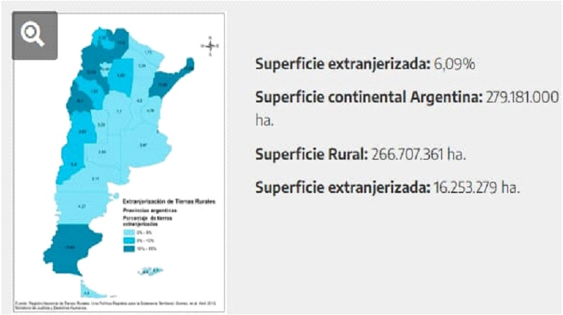

12 diciembre 2023
Federación Agraria emitió un comunicado en el que cuestionó que los profundos cambios que intenta llevar adelante el Gobierno sean a través de un decreto y sin pasar por el Congreso –más allá de que el DNU efectivamente puede ser rechazado por ambas cámaras–, pero apuntó fundamentalmente contra la propuesta de derogar la Ley de Tierras.
En la lectura del DNU el presidente de la Nación anunció “Derogación de la Ley de Tierras para promover las inversiones” parece ser que ésta Derogación responde a un pedido que le hicieron a Javier Milei durante su campaña desde la Cámara Argentina de Inmobiliarias Rurales (CAIR).
La “Ley de tierras” establece que no más del 15% de los territorios rurales de Argentina puede permanecer en manos de extranjeros. Además, señala un límite de 1.000 hectáreas en la zona núcleo por persona extranjera, y una cifra equivalente en otras regiones del país.
De todos modos, la realidad es que un mapa elaborado por el propio Estado argentino muestra que solo el 6,09% de la tierra argentina está “extranjerizada”.
En este marco, desde CAIR consideran que atraer el ingreso de capitales foráneos puede reactivar el mercado y darle a la tierra un mejor valor, teniendo en cuenta que, comparado con los precios de otros países, Argentina está muy rezagada.
Por su parte Federación Agraria no dudo en manifestar su rechazo, “Si bien el DNU contiene aspectos positivos y negativos, queremos dejar expresado desde ya nuestro rechazo en particular a la apertura irrestricta de la compra de tierras por parte de extranjeros en nuestro país. Sin límites, ponemos en riesgo la supervivencia de los productores y la soberanía de nuestros recursos naturales”, remarcó.
A su vez, la entidad no perdió tiempo y adoso el reclamo por el aumento de las retenciones. “Con el pretexto de atraer inversiones, es necesario recordar que durante 21 años desde el sector agropecuario hemos aportado casi 200 mil millones de dólares en concepto de retenciones, que han sido la herramienta que provocó la desinversión y la desaparición de miles de pequeños y medianos productores” señaló. Seguido de ello no dudó en ironizar un poco diciendo “Es oportuno aclarar, también, que si nos sacaran las retenciones, estaríamos en condiciones de generar las inversiones que tanto anhela el gobierno y espera de parte de los extranjeros”… Una ironía que podría contener mucha verdad.
CONFEDERACIONES RURALES ARGENTINAS apoya rotundamente las medidas anunciadas por Milei.
De las entidades que componen la Mesa de enlace, parece ser la CRA la única que hizo público su apoyo al actual Gobierno emitiendo un comunicado elogioso con el decreto de necesidad y urgencia presentado por el presidente, Javier Milei.
“CRA apoya la línea trazada en materia de transformación del Estado”, se titula el documento, y señala que las medidas de Milei “apuntan a transformar el estado actual de la Nación, redefinir el rol del Estado, disminuir el déficit fiscal imperante, abrir a la competencia, desregular y perfilar una Argentina en línea con el resto de los países exitosos del mundo”, por lo que “merecen el respaldo global de entidades como la nuestra”.
En la entidad presidida por Carlos Castagnani sostuvieron que el direccionamiento político llevado a cabo en gestiones anteriores de Gobierno, a las cuales calificaron como “recetas intervencionistas”, “han llevado a la Argentina a los peores guarismos de su historia en materia de pobreza e indigencia, lo que evidencia la decadencia de un modelo populista que atrasa y detiene la producción, al tiempo que fabrica miseria y marginalidad”.
SOCIEDADES RURALES ARGENTINAS (SRA) aportó un análisis a través de sus técnicos de las principales medidas que afectarían al Agro.
Los Técnicos de Sociedades Rurales Argentinas (SRA) señalaron “El Decreto fue publicado en el Boletín Oficial el 21 de diciembre de 2023 con el título “Bases para la Reconstrucción de la Economía Argentina”, con un largo cuerpo normativo constituido por XIV títulos y 366 artículos los que conforman un amplísimo marco de desregulación de distintos ámbitos y sectores de la economía nacional” entre otros conceptos, detalla la desregulación económica en aspectos de economía general y “la inserción al mundo mediante la Organización Mundial del Comercio (OMC) y la Organización para la Cooperación y el Desarrollo Económicos (OCDE); mencionan el aspecto de los warrants, con la derogación de la Ley 9643 que “Elimina prohibición a las empresas de depósito/almacenes a las operaciones de compraventa de frutos y productos de depósitos, en vez de certificados o warrants; elimina prohibición de almacenar en un mismo local o en locales contiguos mercaderías susceptibles de alterarse recíprocamente; eliminando la regulación sobre destrucción de warrant, elimina vigencia de efectos de warrant por 6 meses, y elimina exoneración de impuesto de patente a los depósitos a emitir warrant. Libera la intervención al control de warrants; habilitar uso de documentación electrónica; elimina precio mínimo de emisión de warrants.”
(Un warrant es un producto negociable que incorpora el derecho de comprar o vender un activo (subyacente) a un precio de ejercicio y para un plazo determinado. El que adquiere un warrant tiene el derecho, pero no la obligación de comprar o vender el subyacente en la fecha de vencimiento.)